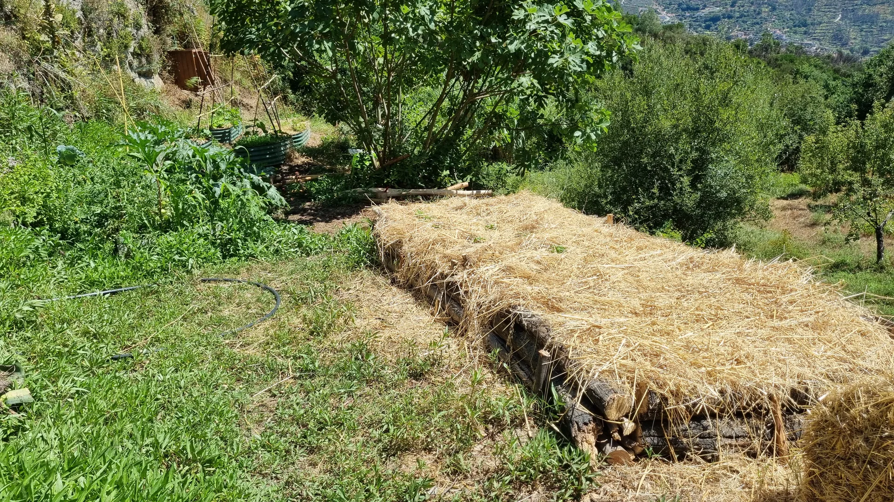
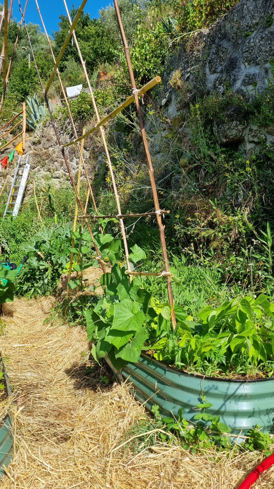
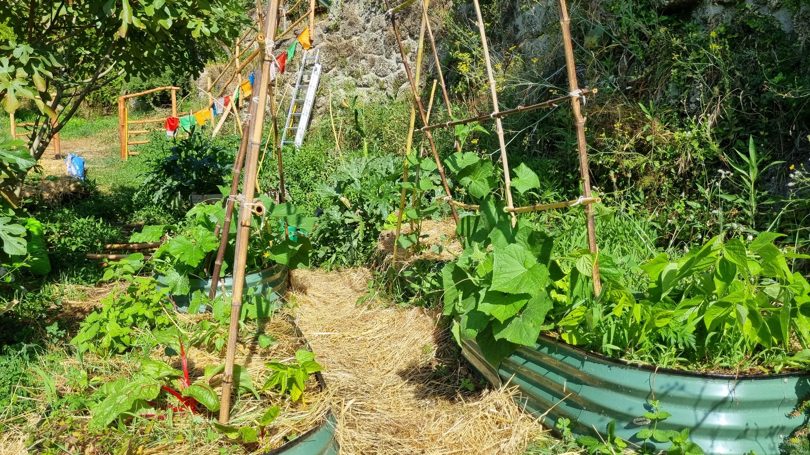
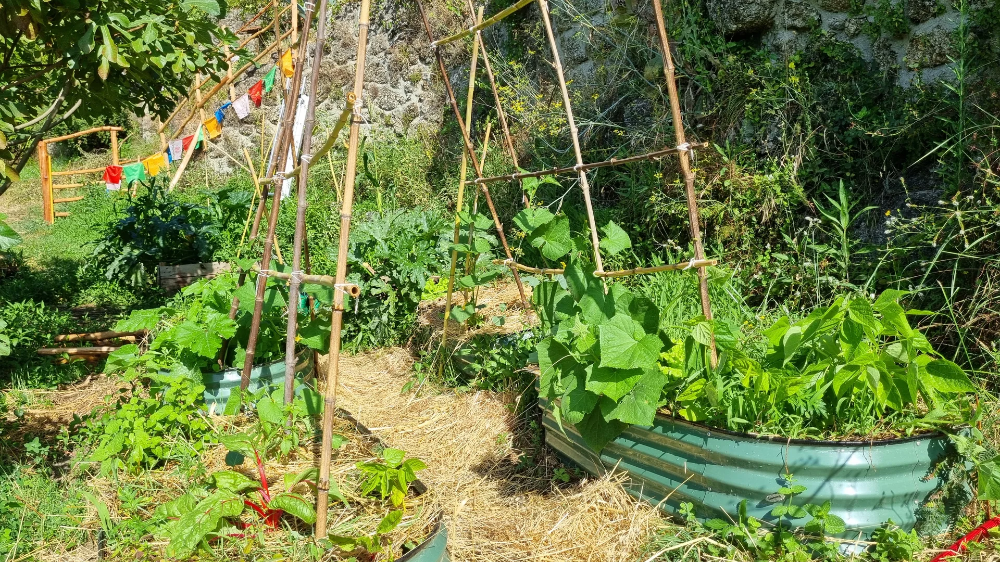
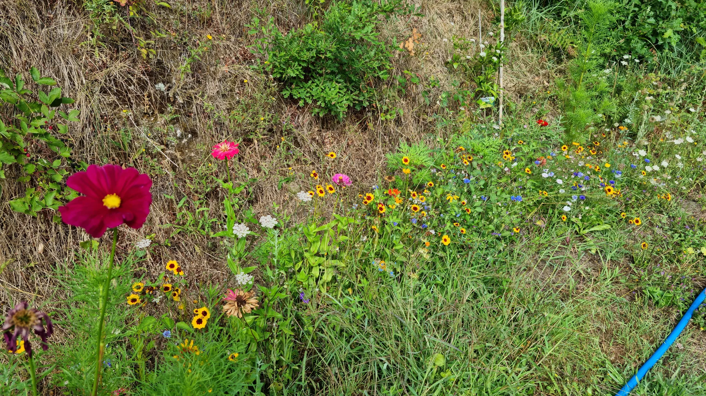

Water held
Slow, spread and sink rainfall into soil, roots and living landscapes.
Movement · infiltration · storage · overflow · vegetation

01 · For buyers + new stewards

02 · Water + living soil

03 · Orchard regeneration

04 · Food forests + abundant edges

05 · Planting + implementation

06 · Projects + pilots


A little dreaming before designing 🌱
Before we talk solutions, I’d love to understand your land, your hopes, and what feels most alive or challenging right now.
There are no perfect answers. A few sentences, photos, a map pin, a walking video or a voice note are completely welcome.


Productive ecological restoration
Restoration does not have to mean removing people from the landscape.
Beautiful systems can grow food, fertility, habitat, shade, livelihoods and ecological resilience together through agroforestry, perennial crops, orchard systems, mixed production, biomass, living soil, water cycling, succession and diversity.
No universal yield promise. The work begins with context, observation and what the land can realistically support.


Events + community
Community days, project visits, shared meals, circles and future regenerative experiences can make space to slow down, participate and reconnect.
{kind=link}
{kind=link}
{kind=link}
{kind=link}
{kind=link}
{kind=link}
{kind=link}
{kind=link}
{kind=link}